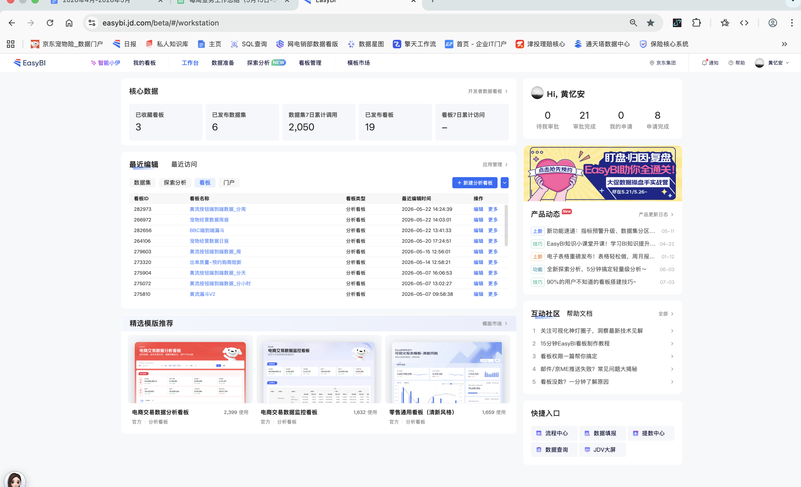
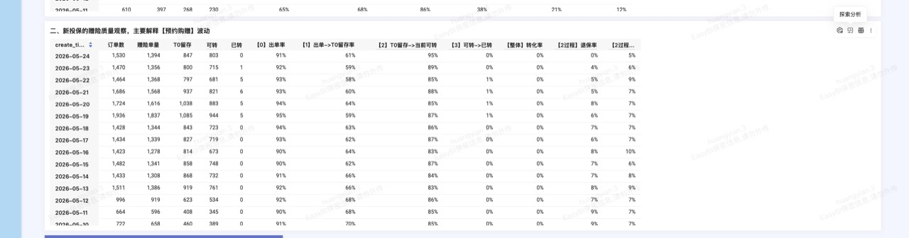
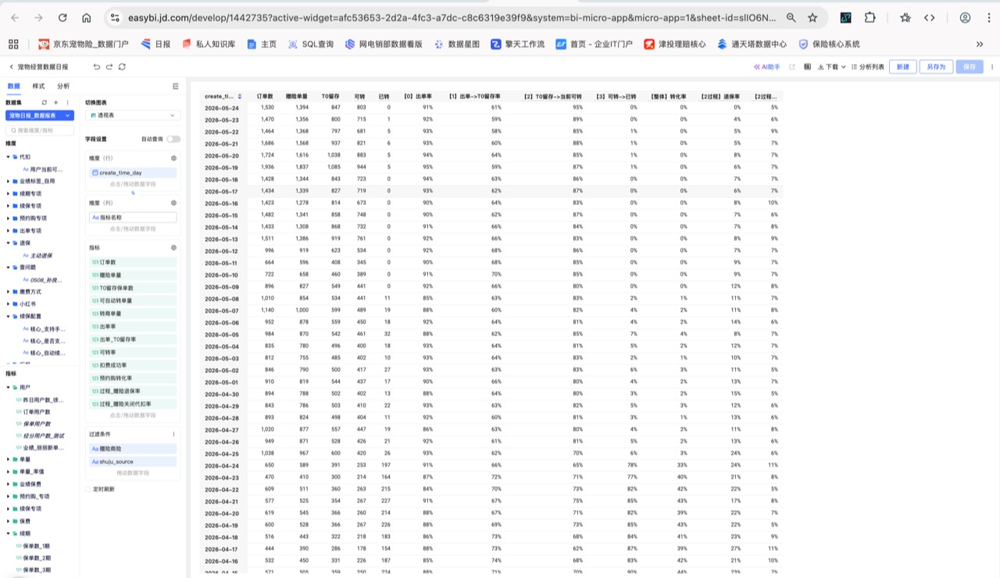
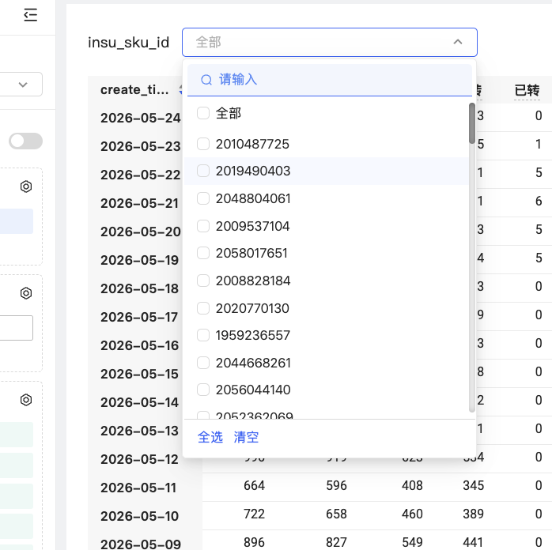
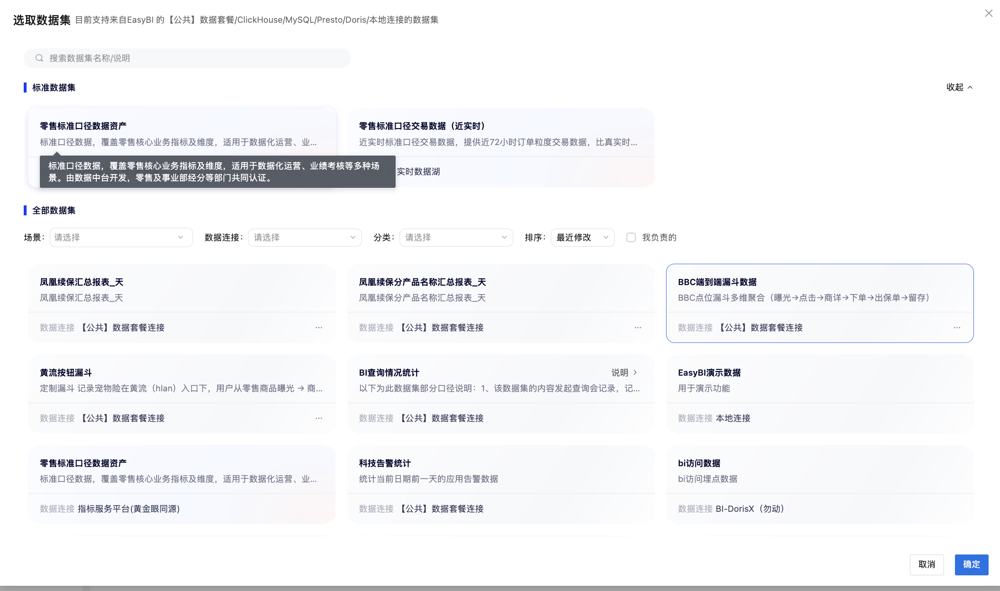
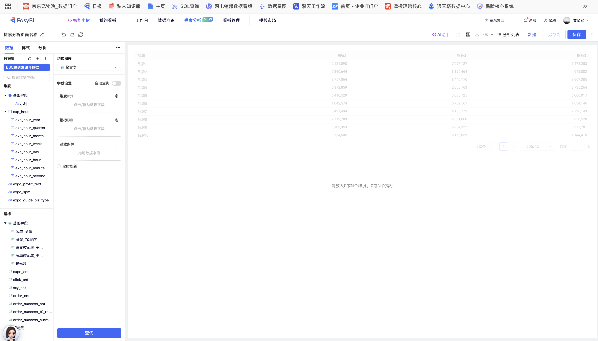
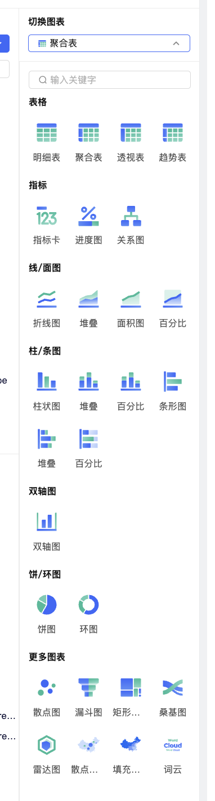

如何使用
工作台
带着第一节建立的业务框架，先打开现成报表，再进入探索分析自己搭一轮查询：从业绩结果看到具体业务路径。
00 两条路线，先易后难
入门：先看现成报表
打开「宠物经营数据日报」，筛选自己负责的产品，先看订单数是否影响业绩达成。
进阶：再做探索分析
进入「探索分析」，选择「BBC端到端漏斗数据」，自己放维度、指标和条件，定位漏斗哪一步出问题。
01 进入工作台：入口与权限
只记住一条路径：打开 EasyBI，有权限就从顶部进入「探索分析」；没有权限先按页面提示提交申请。
直接打开链接进入 easybi.jd.com。已有权限可继续使用；没有权限时，按页面申请提示提交访问申请。
从顶部导航进入「探索分析」点击页面顶部的「探索分析」，进入运营自己查询与拆解数据的工作台入口。

02 案例教程 A：先用现成报表看订单数
运营先关心业绩是否达成。这里不先堆转化指标，而是从最直接的业务结果开始：订单数。
打开现成报表进入团队已经搭好的报表结果页。这里展示的是报表，不是让你先去选择数据集。


在工作台筛选负责产品进入探索分析后，先看订单数；需要缩小范围时，用 insu_sku_id 只看自己负责的产品。

| 看到什么 | 先怎么判断 | 下一步查什么 |
|---|---|---|
| 订单数连续下降 | 业绩承压的直接信号 | 再看是哪个产品、哪段日期最明显 |
| 订单数稳定，后续转化变差 | 流量/订单不是主要矛盾 | 继续看出单、留存、可转或已转环节 |
| 只在某天异常 | 先不急着定业务动作 | 确认数据更新与当天活动因素 |
查数前，随手确认四件事
打开查数清单
记录主指标、时间、产品范围、拆分维度，以及改完动作后如何复看。
本案例应该记什么
主指标写「订单数」；范围写负责产品；时间写观察周期；下一层再写过程转化指标。
03 案例教程 B：用 BBC 漏斗自己搭查询
现成报表回答不了新问题时，再进入「探索分析」自己搭查询：选择数据集，把要拆的维度和要看的指标放进去。
新建探索分析，选择数据集在数据集列表选择「BBC端到端漏斗数据」，确认它覆盖曝光、点击、商详、下单、出保单和留存链路。

放时间维度将 `exp_hour_day` 放入维度（行），先按天观察变化。
放核心指标先选择 `expo_cnt`、`click_cnt`、`sxy_cnt`、`order_cnt`、`order_success_cnt`，不要一上来把所有字段塞进去。
加必要筛选并查询限定观察日期或入口，点击「查询」，先看哪一段量级或转化最异常。

切换视角表格确认数值，折线图看变化时间，漏斗图对照掉点位置。

这五步分别在配置什么
| 页面区域 | 它在解决什么问题 | 示例 |
|---|---|---|
| 数据集 | 我要从哪套数据里查 | BBC端到端漏斗数据 |
| 维度（行） | 我想按什么拆 | `exp_hour_day`，按天看趋势 |
| 指标（列） | 我要看什么业务结果 | 曝光、点击、下单、出保单 |
| 过滤条件 | 只研究哪个范围 | 日期范围、入口或产品 |
| 切换图表 | 数字或趋势用什么方式看 | 聚合表、折线图、漏斗图 |
| 想回答的问题 | 放入的字段 | 能推动的动作 |
|---|---|---|
| 曝光是不是少了 | `expo_cnt` 按日趋势 | 检查入口曝光与投放/资源位安排 |
| 看到后是否愿意点 | `click_cnt` 与曝光对照 | 调整入口文案、利益点或素材表达 |
| 点击后是否继续购买 | `sxy_cnt`、`order_cnt` | 优化商详承接与下单路径 |
| 订单是否最终成功 | `order_success_cnt` 与留存指标 | 追查出保单/留存环节的损失点 |
04 查完以后，只留下一句话和一个动作
我看到了什么
例如：负责产品的订单数连续下降，或漏斗中的点击到下单环节变化最大。
主要矛盾在哪
把范围缩到一个产品、时间段或漏斗环节，不停在“整体不好”。
我先做什么
决定一个运营能推动的动作，并约定用同样指标回来看结果。
05 1 分钟有奖竞答
先选第一步，再补充你会怎样继续向下定位。
查看参考答案
先选 A。确认是机会规模变少，还是续保率下降；再按产品下钻。若某个 SKU 波动明显，带着数据结果找产品经理和开发排查。